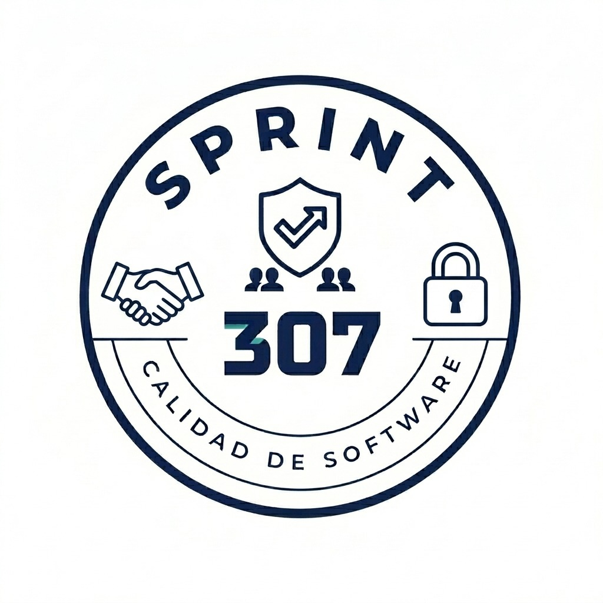

Scrum Master
Facilitación y mejora continuaAcompaña la organización del trabajo, ayuda a detectar impedimentos y promueve conversaciones de mejora.
Motivación: aprender a colaborar con objetivos compartidos y un proceso visible.

Sistema de Gestión de Calidad Calidad de software · Sprint 307Sistema de Gestión de Calidad del Software es un proyecto educativo de propósito académico: acercar la teoría a estudiantes y profesionales en formación.
Reunimos conceptos de calidad del software, procesos tradicionales y enfoques ágiles en un mismo recorrido. Buscamos que cada lector pueda explicar una idea, reconocer sus límites y usarla en una decisión concreta.
Este material apoya el estudio y la práctica. No reemplaza las fuentes originales, la formación especializada ni el análisis del contexto de cada proyecto.
Acompaña la organización del trabajo, ayuda a detectar impedimentos y promueve conversaciones de mejora.
Motivación: aprender a colaborar con objetivos compartidos y un proceso visible.
Organiza la información, cuida la jerarquía visual y revisa contraste, etiquetas y lectura de los diagramas.
Motivación: hacer que conceptos complejos puedan entenderse sin barreras innecesarias.
Aporta la organización técnica de las páginas, la consistencia de componentes y el cuidado del mantenimiento.
Motivación: transformar ideas educativas en una experiencia coherente y sostenible.
Define comprobaciones de contenido y presentación, identifica defectos y revisa que los ejemplos sean consistentes.
Motivación: usar la calidad como práctica de todo el proceso, no solo como revisión final.
Definiciones legibles, diagramas con sentido y ejemplos que conectan teoría y práctica.
Referencias reconocidas para profundizar y casos didácticos identificados como tales.
Las dudas y correcciones ayudan a detectar ambigüedades y a orientar nuevas explicaciones.